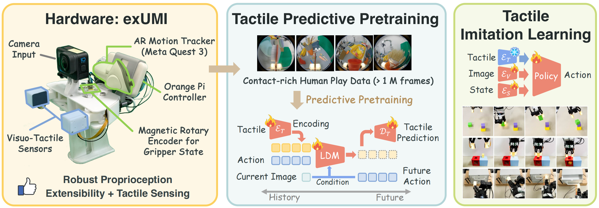

|
Pengyu An（安鹏宇） I am a fourth-year undergraduate student in Shanghai Jiao Tong University (SJTU). I am a member of the Zhiyuan Engineering Honor Program. My undergraduate major is Intelligent Sensing Engineering (ISE), which is related to AI, control, sensing, information processing and so forth. My research interest mainly focuses on robotic manipulation, computer vision (CV) and multimodal large language model (MLLM). I am aimed to develop robots equipped with generalizable, versatile and robust manipulation capabilities. I am also interested in the optimization and construction of effective models which can better understand data of different modalities such as vision, tactile, language and so on. During my undergraduate study, I am fortunate to be mentored by Prof.Yonglu Li in the MVIG-RHOS team. |

|
{kind=link}
News |
|
Publications* indicates equal contributions, † indicates equal advising. Representative papers are highlighted. |
|  |
exUMI: Extensible Robot Teaching System with Action-aware Task-agnostic Tactile Representation
Yue Xu, Litao Wei, Pengyu An, Qingyu Zhang , and Yong-Lu LiConference on Robot Learning (CoRL), 2025 project page / paper / code / youtubeIn this paper, we introduce exUMI, a tactile robot learning system with both hardware and algorithm innovations, achieving 100% data usability as well as capturing contact dynamics and mitigating tactile sparsity. |

|
Analysis of Low Voltage AC Transmission System with Simultaneous Bi-directional Transmission of AC Power and Signal
Jianfeng Jiang ,Zekun Wang , Pengyu An,Zhihang Song ,Yihe Shen ,Siwen Ye ,Xijun Yang , andJiangdong Mu International Conference on Energy, Electrical and Power Engineering (CEEPE), 2024 [Spotlight] project page / paper / code In this paper, we introduce a low-voltage AC transmission system with bidirectional simultaneous transmission of AC power and information data. |
Selected Awards and Honors |
|
|
Design and source code from Jon Barron's website. |